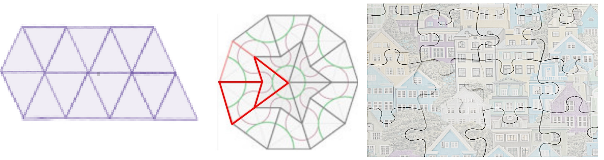
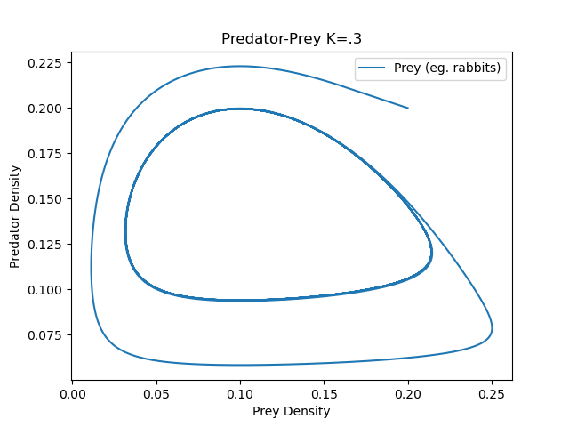
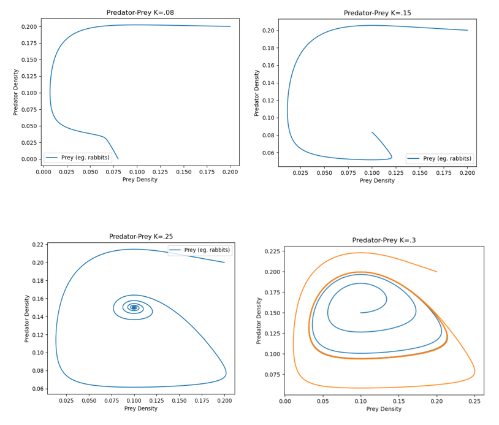
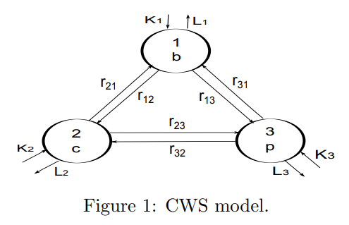
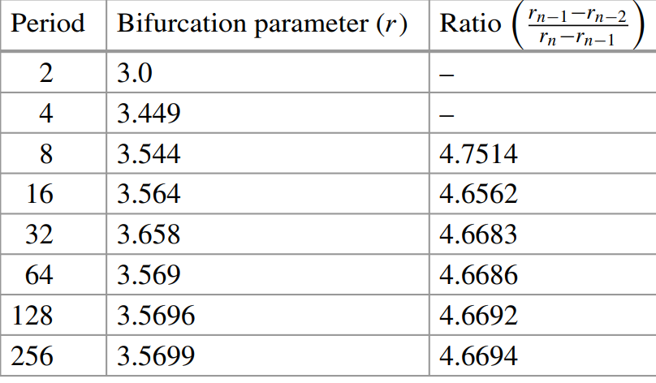
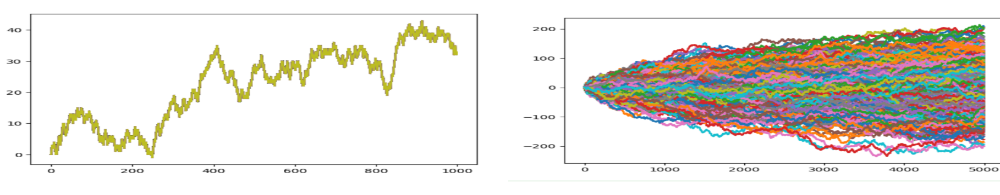

15.2. 2. Fundamental Concepts#
In this section we describe qualitatively several concepts fundamental to complex systems.
15.2.1. Homogeneity of Constituent Parts#
One basic difference between pure physical science and a study of human society is an assumption about the degree of homogeneity of the constituent parts of a system. Statistical physics methodology applied to an ensemble of identical gas molecules is simpler than application to a society comprised of unique individuals with different values, decision-making, propensity to do good or evil, etc. Systems where a homogeneity assumption of the constituent units is reasonable (eg. large flock of birds in synchronized flight) are more amenable to mathematical approaches.
15.2.1.1. Exercise#
Exercise
2.1 Referring to Figure 3, explain how the degree of homogeneity of the constituent jig saw pieces relates to the overall complexity of the jigsw puzzle.
{kind=link}
Left: 1 piece jigsaw puzzle (crystal) Center: 2 piece ‘kite and dart’ jigsaw puzzle (quasicrystal) Right: Random piece jigsaw puzzle of an urban neighborhood.
15.2.2. System Classification#
15.2.2.1. Open, Closed, and Isolated Systems#
Systems can be classified according to whether they exchange energy or mass with the environment:
- ISOLATED: exchanges neither mass nor energy with its environment.
- CLOSED: exchanges energy but not mass with its environment.
- OPEN: exchanges both mass and energy with its environment.
Note that in studying complex human society, energy exchange may be broadly defined (for example, a remote exchange of ideas or financial credit.)
15.2.2.3. Emergent Global Behavior#
Models can help explain how recognizable macroscopic or global states emerge from microscopic or local interactions. For example, synchronized movement (coherence) of a flock of birds can be modelled as emergent macroscopic system behavior based on a few simple local rules [Tranquillo 2019] (https://www.youtube.com/watch?v=nbbd5uby0sY)
- SEPARATION: Birds keep a minimum distance from other birds;
- ALIGNMENT: Birds move towards the average direction of the neighbors they see around them; and
- COHESION: Birds move towards the average center of mass of the birds around them.
15.2.2.4. Exercises#
Exercises
2.2.1 During the civil war, Tigray was suppressed into a closed system. Shortly after the war ended in November 2022, UNICEF reported over 2,000 schools were closed (https://www.overleaf.com/project/64cea7ed189af9e4b7c1ba38). Elementary school students’ walk to school increased from 1 to 4 miles, and student to classroom ratios were over 400:1. Without blackboards, a teacher resorted to use of a large stone in working with students (Figure 4).
{kind=link}
Figure 4 A teacher used a rock in lieu of a blackboard as a result of the ransacking/blockade of Tigray during the civil war.
How would the rebuilding of education be different within an isolated, closed, or open educational system?
2.2.2 How might coherence (or lack thereof) of IDP camps impact the complexity of a response?
2.2.3 Show that a clearly visible pattern emerges if we apply Stephen Wolfram’s Rule 90 to a single black square on a large graph paper (https://mathworld.wolfram.com/SierpinskiSieve.html). The rule explains the coloring of squares on the row below the current row.

Figure 5 Wolfram’s Rule 90 shows how to compute the cell in the row beneath given the three cells above it. What pattern emerges if we apply this rule to a row with a single black square?
15.2.3. Linearization#
Linear systems are foundational and a starting point for the study of dynamical systems. Nonlinear systems are needed to model complexity and have been important in the study of dynamical systems for the past 50 years. In general, non-linear systems do not have exact solution methods. Non-linear systems may be approximated by linear systems near equilibrium points.
Consider a non-linear system
An equilibrium point \((x^*,y^*)\) for the non-linear system satisfies
The Jacobian matrix (all partials are evaluated at the equilibrium point) is
If the real part of the eigenvalues of the Jacobian matrix are non-zero, then the behavior of the non-linear system at the equilibrium point \((x^*,y^*)\) is given qualitatively by the behavior of the equilibrium point at (0,0) of the linear system

Figure 6 (Left) Nonlinear solutions (Right) Linearization at the equilibrium point (0,0)
Let A be the Jacobian matrix for a linearized 2D non-linear system at an equilibrium point \(P=(x^*,y^*)\). Figure 7 summarizes the qualitative behavior of the nonlinear system near P (Exercise 2.3.1).

Figure 7 Classification of equilibria for linearized 2-\(D\) systems. Figure Credit: Appendix A of J.D. Murray’s [2002] Mathematical Biology. (Used with permission of the author.)
15.2.3.1. Logistic Growth#
Moving away from an equilibrium point, the need to transition from an approximating linear behavior to non-linear behavior is illustrated using COVID-19 data shown in Figure 8. Mathematically, let \(k\) and \(M\) be positive constants, and consider the logistic growth equation
with \(z(0)=z_0\) positive and close to 0. Note that when \(z/M\) is small, the linear exponential growth model \(\frac{dz}{dt} = kz\) is a good approximation for the nonlinear logistic model. Over time, as \(z\rightarrow M,\) the non-linearity which arises from multiplication of \(kz\) by \((1-\frac{z}{M}\)) is needed to cap the long range growth by reducing the value of \(\frac{dz}{dt}=kz(1-\frac{z}{M})\) to zero.

Figure 8 COVID-19 data plotted as circular points together with exponential and logistic growth curves.
For simplicity, set \(k=2\), \(M=2\) so that \(\frac{dz}{dt}=g(z)=2z-z^2\). The stability of the equilibrium when \(z=2\) can be inferred from the local minimum point of a potential function \(V(z)=-z^2 + \frac{1}{3}z^3\) (Figure 9) which satisfies \(V'(z)= - g(z).\) When \(z>2\), \(V'(z)>0 \Rightarrow \frac{dz}{dt}<0\) (so \(z\) decreases towards the equilbrium value); and when \(z<2\), \(V'(Z)<0 \Rightarrow \frac{dz}{dt}>0\) (so \(z\) increases towards the equilibrium value. The idea that optimization of an auxiliary function (in this case the potential \(V(z)\)) can be used to analyze system behavior will be important in Section 3.
{kind=link}
Figure 9 The minimum point on the potential function \(V(z)=-z^2 + \frac{1}{3}z^3\) corresponds to the stable equilibrium \(z=2\).
15.2.3.2. Exercises#
Exercises
2.3.1 Let A be the Jacobian matrix for a linearized 2D non-linear system at an equilibrium point \(P=(x^*,y^*)\). Use Figure 7 to explain how eigenvalues of A can be used to find the following qualitative behavior of the nonlinear system near P.
2.3.2 Use linearization to describe the behavior of the following system near its equilibrium at (0,0):
15.2.4. Bifurcations#
It is often the case that the behavior of a physical system is dependent on a parameter value such as temperature. In some cases, there is a critical parameter value at which the macroscopic state of a system undergoes a fundamental change in behavior (for example, transition of water from liquid to solid state).
Consider a natural environment with two types of animals: a single predator (eg. foxes) and a single prey (eg. rabbits). There are different possibilities for the equilibrium states of the predator density \(F^*\) and prey density \(C^*\):
i) the predator population dies off (\(F^*=0\)) for lack of food and there is a stable number of prey \((C^*>0)\) that remains;
ii) there is a stable number of both predators and prey (\(F^*>0,C^*>0)\); or
iii) the number of predators and prey cycle periodically (see Figure 10).
{kind=link}
Figure 10 A predator-prey model which exhibits a stable limit cycle seen in the middle region of the diagram. The number of predator and prey both fluctuate periodically.
For this system, the carrying capacity \(K\) of the predator population is a bifurcation parameter (See Figure 11 and Exercise 2.3.1):
a) When \(K>0\) is small, a stable steady state occurs at \((F,C)=(0,C^*)\) with \(C^*>0\).
b) For higher values of \(K\), the equilibrium \((0,C^*)\) loses its stability and there arises a new stable equilbrium (sink) \((F^*,C^*)\) with \(F^*>0\) and \(C^*>0\).
c) For even higher values of \(K\), this equilibrium \((F^*,C^*)\) becomes a stable spiral sink.
d) For still higher values of \(K\), the equilibrium \((F^*,C^*)\) loses its stability and a stable limit cycle (closed curve) solution appears.
{kind=link}
Figure 11 Bifurcation in the Predator-Prey Equations occurs as the predator carrying capacity \(K\) is varied.
15.2.4.1. Exercises#
Exercises
2.4.1 Consider the Rosenzweig-MacArthur (RM) predator-prey model [Martin and de Roos 2023]
where
F= prey density (eg rabbits); C= predator density (eg foxes); dF/dt = dynamic change of prey; dC/dt = dynamic change of predator; r = prey natural growth rate; K = prey carrying capacity; a = attack rate; h = handling rate (predator needs h time units to consume prey); e = prey offspring proportionality constant; \(\mu\) = predator death rate.
Use a JNB to confirm that
a) When K>0 is small, a stable steady state occurs at (F*,C*)=(K,0) b) For higher values of K, there is a steady state with F*>0, C*>0. c) For even higher values of K, the equilibrium is a spiral sink. d) For still higher values of K, the equilibrium loses its stability and a stable limit cycle (closed curve) solution appears.
2.4.2 The RM model exhibits what is called a Hopf bifurcation, as described in the diagram below:
{kind=link}
Explain how the Hopf bifurcation diagram corresponds to your solution to Exercise 2.4.1.
2.4.3 One dimensional maps can also undergo bifurcations. Consider the 1D map \(x_{n+1}=rx_n(1-x_n)\).
a) Find the period one point (fixed point) for this map when \(r<2\). b) This map undergoes a period doubling bifurcation as shown in the figure below. What type of universality is suggested by this sequence of bifurcations?

15.2.5. Normal vs Power Law Behavior#
A system which evolves over time is deterministic if its future states are modelled by a deterministic function of time. In contrast, future states may depend on a random process.
One-dimensional random walks are among the simplest type of non-deterministic systems. Let \(x_t\) denote the position at discrete times \(t=0,1,2,...\) of an object moving at random on a one-dimensional integer lattice. Consider a random walk with \(x_0=0\) and
where \(e_t=\pm 1\) with equal probability. The random variables \(e_t\) and \(e_{t'}\) (\(t\neq t')\) are assumed to be independent and identically distributed (IID).
A single random walk is impossible to predict, and any observed trend in a specific random walk is not in general a common feature of all random walks. Yet, a large number of random walks will have a predictable expected position \(<x_t>=0\) and variance \(<x_t^2>=t\) (Figure 14) since
\(<x_{t+1}>=<x_t>+<e_t>=<x_t>=<x_0>=0\) for all \(t\); and
\(<x_{t+1}^2>= <x_t^2> + 2<x_t><\epsilon_t> + 1=<x_t^2>+1\Rightarrow <x_t^2>=<x_0^2>+t=t.\)
{kind=link}
Figure 14 (Left) A single random walk is unpredictable. (Right) A large number of random walks have predictable mean \(<x_t>=0\) and variance \(<x_t^2>=t.\)
We can also create a random walk using variable step sizes by random draws from a continuous probability distribution. Figure 15 shows the difference between random walks which are normal vs. Cauchy (power-law) distributed. The former gives rise to two-dimensional Brownian motion where both the \(x\) and \(y\) step sizes are normally distributed. Very large steps sizes have negligible probability of occurrence and are not observed. On the other hand, large step sizes (‘long-flights’) are observed in power-law (heavy-tail) distributed random walks. These may correspond to catastrophic events (eg. a stock market crash). Complex systems are often characterized by power-law behavior [Fieguth 2021].

Figure 15 Left) Normal and Cauchy (power-law) distributions. (Center) Brownian motion with moves normally distributed. (Right) Heavy tail of a Cauchy distribution gives rise to long-flights in the random walk.
15.2.5.1. Exercise#
Exercise
2.5 Use a JNB to re-create the graphs in Figure 15.